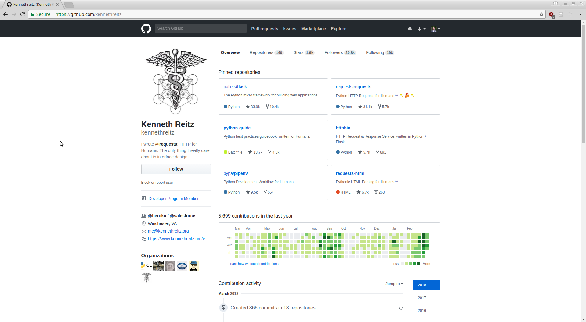
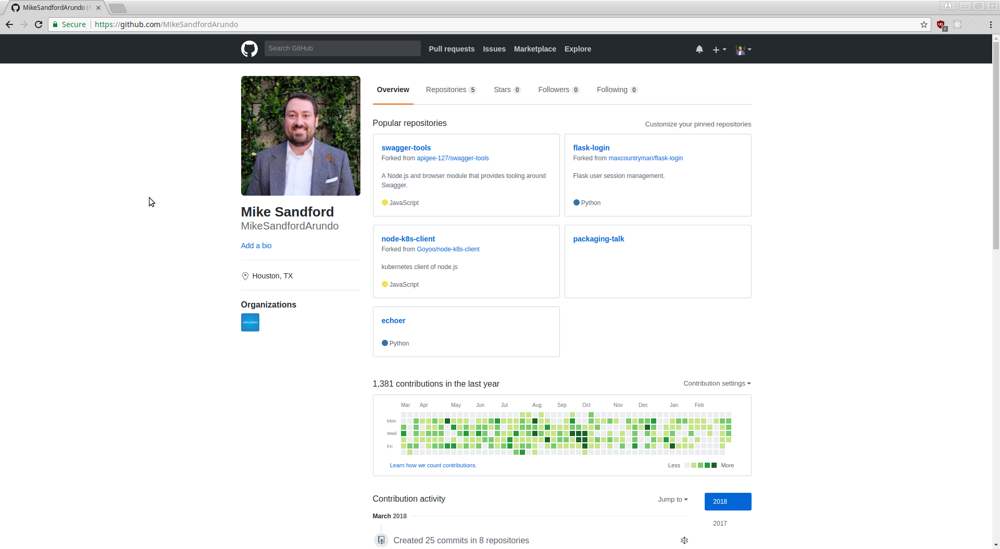
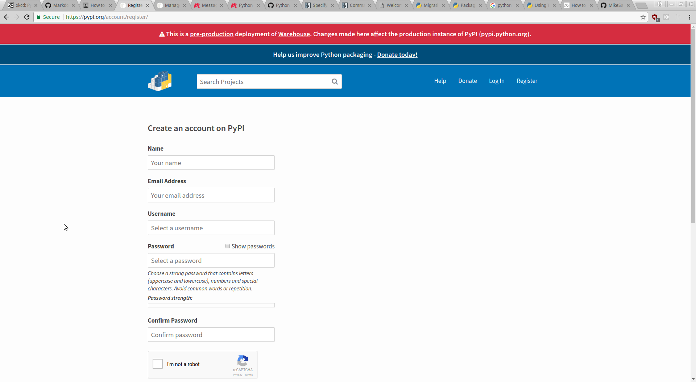

Python Packaging & Publishing
How to organize your code into a python package that can be installed with pip and published to pypi or other python repositories.
Mike Sandford
mike.sandford@arundo.com
Arundo Analytics
http://www.arundo.com
How to organize your code into a python package that can be installed with pip and published to pypi or other python repositories.
mike.sandford@arundo.com
http://www.arundo.com
pip install my-project do_something
or
git clone git@github.com:me/my-project.git cd my-project pip install -r requirements.txt echo "$PATH=~/my-project/:$PATH" >> ~/.bashrc python do_something.py
git submodules vs pip install my-project==0.2.7
Entry points are a way to make your python program available neatly
entry_points={ 'console_scripts': [ 'my_project = my_project.__main__:main' ] },
What you need to easily distribute your software via:

It's far easier to get hired with good work in the public eye
 vs 
pip install package-name
vs
git clone github.com:someguy/someproject.git cd someproject vi README pip install -r requirements.txt // scratches head??? // gives up *shrug*
I started with these directions: http://peterdowns.com/posts/first-time-with-pypi.html
Turns out they're totally wrong now!

[distutils] index-servers = pypi testpypi [pypi] repositoy=https://pypi.python.org/pypi username=MikeSandfordArundo password=WHOAWHOAWHOA [testpypi] repository=https://test.pypi.org/legacy/ username=MikeSandfordArundo password=WHOAWHOAWHOA
(virt) sandford@mjolnir ~/talks/echoer $ python setup.py sdist /usr/lib/python3.5/distutils/dist.py:261: UserWarning: Unknown distribution option: 'entry_points' warnings.warn(msg) /usr/lib/python3.5/distutils/dist.py:261: UserWarning: Unknown distribution option: 'install_requires' warnings.warn(msg) running sdist running check warning: sdist: manifest template 'MANIFEST.in' does not exist (using default file list) warning: sdist: standard file not found: should have one of README, README.txt writing manifest file 'MANIFEST' creating Echoer-2.2 creating Echoer-2.2/echoer making hard links in Echoer-2.2... hard linking setup.cfg -> Echoer-2.2 hard linking setup.py -> Echoer-2.2 hard linking echoer/__init__.py -> Echoer-2.2/echoer hard linking echoer/cli.py -> Echoer-2.2/echoer creating dist Creating tar archive removing 'Echoer-2.2' (and everything under it) (virt) sandford@mjolnir ~/talks/echoer $ twine upload --repository-url https://test.pypi.org/legacy/ dist/* Uploading distributions to https://test.pypi.org/legacy/ Enter your username: MikeSandfordArundo Enter your password: Uploading Echoer-2.2.tar.gz 100%|███████████████████████████████████████████████████████████████| 3.42k/3.42k [00:01<00:00, 3.31kB/s] (virt) sandford@mjolnir ~/talks/echoer $
(virt) sandford@mjolnir ~/talks/echoer $ twine upload dist/*Uploading distributions to https://upload.pypi.org/legacy/ Uploading Echoer-2.2.tar.gz 100%|███████████████████████████████████████████████████████████████| 3.42k/3.42k [00:00<00:00, 14.6kB/s] (virt) sandford@mjolnir ~/talks/echoer $
find_packagesmike.sandford@arundo.com
http://www.arundo.com/
/